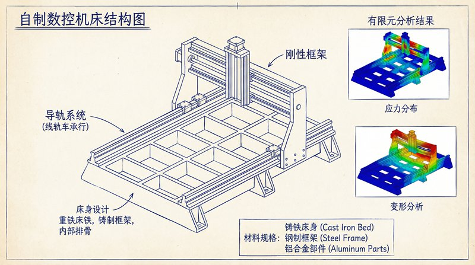
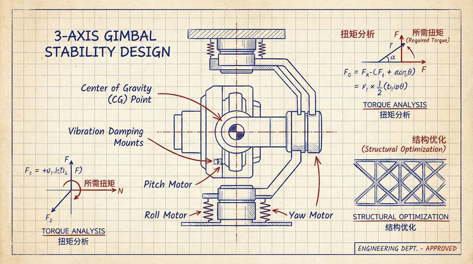

返回课程列表
第四课
动力学
电机驱动与齿轮传动的动力学
⏱️ 约55分钟
电机是极客项目的动力源，齿轮是力的传递者。理解电机特性和齿轮传动比，才能为项目选择合适的动力系统。
电机的动力学特性
电机将电能转化为机械能。直流电机的转矩与电流成正比，转速与电压成正比。选择电机需要匹配负载的转矩和转速需求。

极客项目的电机选型
常用电机的动力学特征：
- 直流有刷电机：简单便宜，适合入门项目，效率约70-80%
- 无刷电机：效率高达90%，寿命长，无人机和电动车首选
- 步进电机：精确控制角度，3D打印机和CNC常用
- 舵机：内置减速器和控制器，机器人关节常用
齿轮传动的力学
齿轮传动改变转速和转矩。减速比越大，输出转矩越大但转速越低。齿轮设计需要考虑强度、精度和效率。

齿轮传动设计
齿轮传动的力学原理：
- 减速比：大齿轮齿数/小齿轮齿数，如60:20=3:1减速
- 转矩放大：减速比为3时，输出转矩是输入的3倍（忽略损耗）
- 行星齿轮：紧凑高效，减速比可达100:1，机器人关节常用
- 蜗轮蜗杆：自锁特性，适合需要保持位置的场合如升降机构